MOB-BOT#
{kind=link}
Church Co. MOB-BOT#
{kind=link}
Turing Inc. MOB-BOT#
As you work for your assigned company (Church Inc. or Turing Co.), you will be coding and upgrading your very own MOB-BOT. MOB-BOT is a friendly, cute, and efficient robot designed to mine in The Quarry forever! How lovely.
Here are some important notes about MOB-BOT that will help you to improve its functionalities.
Tech Tree#
MOB-BOT can undergo a myriad of upgrades that will make it an amazing, mining machine. This tree structure shows the available upgrade paths and how you can improve.
Structure#
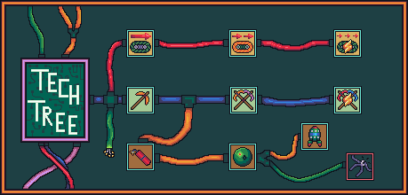{kind=link}
Here’s a description of each Tech:
Tech Name |
Tech Description |
|---|---|
Improved Drivetrain 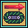 |
This tech will increase your movement, allowing MOB-BOT to move up to 2 tiles per turn! |
Superior Drivetrain 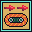 |
Grants an additional increase in movement, allowing MOB-BOT to move up to 3 tiles per turn! How wonderful! |
Overdrive Drivetrain 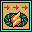 |
The ultimate movement upgrade. MOB-BOT can now move up to 4 tiles per turn! Burn rubber! |
Improved Mining 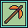 |
A decent upgrade from basic Mining Robotics. MOB-BOT will now gain 2 pieces of ore when you mine! |
Superior Mining 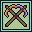 |
This upgraded mining technology brings MOB-BOT’s efficiency to a new level. MOB-BOT will gain 3 pieces of ore when mining! Sensational! |
Overdrive Mining 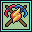 |
MOB-BOT has become the mining machine it was always meant to be. MOB-BOT will now gain 4 pieces of ore when mining! Bring in the money! |
Dynamite 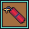 |
Become more efficient with your mining! Dynamite will explode 3 turns after being placed, mining multiple ores at once! |
Landmines 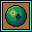 |
The other company keeps taking valuable ores, so start
setting traps for them… |
EMPs 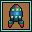 |
EMPs are the rich Bot’s landmine! EMPs steal more ores from the opponent than a normal landmine. Phenomenal! NOTE: once purchased, Trap Defusal CANNOT be purchased. |
Trap Defusal 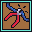 |
Fight back against the traps that are set against you. Trap defusing will deactivate any trap placed by the enemy (as long as you don’t step on it)! NOTE: once purchased, EMPs CANNOT be purchased. |
{kind=link}
{kind=link}
{kind=link}
{kind=link}
{kind=link}
{kind=link}
{kind=link}
{kind=link}
{kind=link}
{kind=link}
For more information on Dynamite, Landmines, and EMPs, go to Placeables.
Make sure to upgrade the Tech Tree as time goes on. Not only will you gain upgrades, but each unlocked Tech will provide extra points. Visit Scoring for an overview of how points are accumulated.
Unlocking Techs#
To unlock these Techs, you must mine Ancient Tech, which will yield science points. These do not count toward your total points.
To unlock these Techs, MOB-BOT must end the turn on top of its company’s base. When there, it can also purchase a new Tech on the following turn (assuming it has enough science points). To do so, use the Enums that are provided, and Taking Action will explain how to implement it in more detail.
Remember - the Tech Tree is… a tree. You must unlock techs in order based on their branches. That means you cannot buy Dynamite without first buying Improved Mining. You can, however, buy Improved Mining and then Improved Drivetrain, and vice versa.
This also means that any branching paths can only access one Tech. More specifically, After purchasing landmines, there is the choice to purchase either EMPs or Trap Defusal. Only one can be purchased. After it is purchased, the other cannot be purchased.
To view the cost of all Techs, please visit Scoring for more information.
Inventory#
Each MOB-BOT comes with its own, standardized inventory system. The inventory has a max capacity of 50 ores. Once capacity has been reached, MOB-BOT will no longer be able to mine. Make sure to go back to base and make a deposit!
Each time you mine, your drop rate will determine how many ores are added to your inventory. For example, if Overdrive Mining (drop rate = 4) was unlocked and there is an empty inventory, the inventory will have 4/50 slots filled.
As more Techs are unlocked, they will either be considered a Passive or Active Ability and behave differently.
Passive Abilities#
All Drivetrain and Mining Techs will be passive. Once you unlock them, they will apply to MOB-BOT. When a Drivetrain Tech is unlocked, it simply allows for more movement actions to take place in one turn. Movement and other implementations to note while coding are explained in Taking Action.
Active Abilities#
What Are They?#
There are 4 active abilities: Dynamite Active Ability, Landmine Active Ability, EMP Active Ability, and Trap Defusal Active Ability. These all have cooldown effects and must be called using Enums, preventing them from being used all the time. The cooldown will represent how many turns it takes until the ability can be used again. Manage your resources properly, and you can get the upper hand!
Ability |
Cooldown |
|---|---|
Dynamite Active Ability |
4 |
Landmine Active Ability |
6 |
EMP Active Ability |
4 |
Trap Defusal |
0 |
Dynamite, Landmine, and EMP Active Abilities#
As listed in the Tech Tree Structure, these abilities allows MOB-BOT to place dynamite, landmines, and EMPs on the ground respectfully. Each of these are explained more in depth in Placeables.
Trap Defusal Active Ability#
This ability is the most unique one that MOB-BOT can acquire. Instead of placing a Landmine or EMP on the ground, MOB-BOT can instead remove Landmines and EMPs. This allows for it to fight back against any selfish, stealing MOB-BOTs. The audacity of them.
This is briefly explained more in Taking Action, and the enums are provided in Enums.
When Using Active Abilities#
When using active abilities, as long as they are available to use, they can be called whenever.
For example, say MOB-BOT has the Dynamite and EMP Active Abilities, and they can both be used. MOB-BOT could place dynamite one turn, and then place an EMP the next turn. The same applies in the other order. As long as the cooldown is no longer active, an ability can be used.
When an ability is usable, it is shown on the Visualizer by showing the ability’s icon colored in.